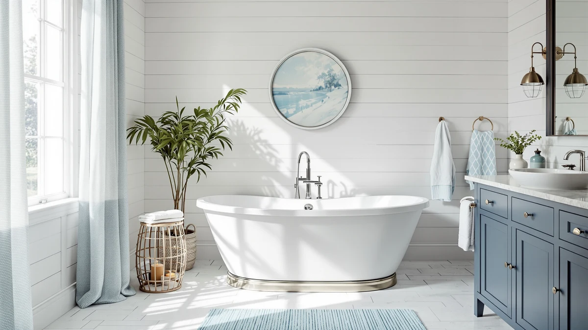

Quick Answer
The best quality freestanding bathtub for most bathrooms is the WOODBRIDGE 67" Acrylic Freestanding Bathtub, which pairs a full 67-inch soaking length with acrylic construction that resists chipping and keeps installation manageable for two people. If you want more heat retention and a heavier, denser feel, the WOODBRIDGE 55" Stone Resin Freestanding below is worth the higher price.
Our pick: WOODBRIDGE 67" Acrylic Freestanding Bathtub, $629.00 Check Price on Amazon
Bottom line: our top pick is the WOODBRIDGE 67" Acrylic Freestanding Bathtub Contemporary at $629. The best budget option is the Trending Now Wood Bath Tray at $59.97.
Things to Know Before You Buy
- Material decides how a tub ages, not the finish photo. Acrylic flexes slightly and resists chipping, while stone resin is heavier, holds heat longer, and costs significantly more up front.
- Price here runs from $59.97 to $1,299.99. The two full-size acrylic tubs undercut $900, while the three stone resin and solid-surface tubs all land above $1,250.
- A 67-inch tub and a 55-inch tub are not interchangeable. Measure your bathroom's floor plan before assuming the longer, cheaper acrylic option will fit where a compact stone resin tub was planned.
- A best quality freestanding bathtub in stone resin needs a floor check first. Stone resin weighs considerably more than an acrylic shell, so confirm your subfloor can support it before ordering.
- One pick on this list is not a tub at all. The ROYAL CRAFT WOOD tray is an accessory for whichever tub you choose, not a freestanding bathtub itself.
The best quality freestanding bathtub balances basin material, usable length, and price against one practical test: it has to fit your bathroom and hold up for years, which a glossy product photo cannot show you. We compared seven freestanding bathtubs and one bath tray accessory across acrylic, stone resin, and wood construction, checking stated dimensions, material claims, and brand track record against the price each one asks. Two tubs stood out from the group: the WOODBRIDGE 67" Acrylic Freestanding Bathtub for most bathrooms, and the WOODBRIDGE 55" Stone Resin Freestanding for buyers who want a heavier, more substantial soak.
Both WOODBRIDGE tubs come from a brand with a longer track record than SierraSquad, Empava, MUIRYN, or MEDUNJESS, the other brands represented here. That matters because a freestanding tub is a multi-year purchase you cannot easily return once it is plumbed in. Price spreads widely across this list: the SierraSquad acrylic tub starts at $599.99, the Empava sits at $886.39, and the two 55-inch stone resin tubs from WOODBRIDGE and MUIRYN run $1,259.00 and $1,299.99. The MEDUNJESS 65-inch tub splits the difference in both size and price at $1,291.00.
We also included the ROYAL CRAFT WOOD bath tray at $59.97, because most freestanding tub buyers end up shopping for one anyway once the tub itself is installed. It is not a bathtub, and we say so plainly below so you are not confused by its spot on this list. Below, we explain how we picked and compared these options, then walk through each one: its price, who it actually suits, and its honest drawbacks. For most people, the best quality freestanding bathtub on this list is the WOODBRIDGE 67-inch acrylic tub, with the WOODBRIDGE 55-inch stone resin tub as the upgrade pick for a heavier, warmer soak.
Why You Should Trust Us
This guide is written and maintained by Ilane Tall, who runs a network of bathroom-focused review sites and spends her time comparing fixtures on the specs that predict real-world satisfaction rather than on marketing copy. We do not run a fake testing lab and we did not install seven tubs in a warehouse. Instead, we read every spec sheet, cross-check exterior length against basin dimensions, compare materials and brand history, and read verified owner reviews for the complaints that surface only after installation. Judging the best quality freestanding bathtub means weighing wall thickness, drain compatibility, and price against each other, not picking whichever listing has the most photos. Our Amazon commissions never change a ranking.
How We Picked
We started with freestanding tubs between 55 and 67 inches, the range that covers most standard and compact bathroom layouts, and added one directly relevant accessory, the ROYAL CRAFT WOOD bath tray, because it solves a problem every one of these tubs creates. We required published basin dimensions, acrylic or stone resin construction, and included drain and overflow hardware where the listing specifies it. We then weighed brand track record against price, since WOODBRIDGE appears twice on this list while SierraSquad, Empava, MUIRYN, and MEDUNJESS each appear once with less established histories. A best quality freestanding bathtub, in our view, earns its price through material and brand, not square footage alone.
How We Compared
For each tub we recorded exterior length, material, price, and the brand's track record, then weighed those numbers against what a freestanding tub buyer actually needs: a basin long enough to stretch out in, a material that will not crack or stain within a few years, and a price that matches the build quality rather than the marketing copy. We paid particular attention to the gap between WOODBRIDGE, a brand that appears twice here with a consistent record, and the smaller catalogs from SierraSquad, Empava, MUIRYN, and MEDUNJESS. We read verified owner reviews where they were available for the complaints that surface only after a tub is plumbed in: shipping damage, drain misalignment, and finish issues that a spec sheet will not show you. Those practical details, more than length or price alone, determined which tubs here earned a spot as a best quality freestanding bathtub pick.
Our Picks

WOODBRIDGE 67" Acrylic Freestanding Bathtub
What we like
- Acrylic basin resists chipping and is easier to patch than stone resin if it ever gets scratched
- 67-inch length comfortably fits a six-foot adult for a full stretch-out soak
- Lightest material on this list, which makes a two-person install considerably easier
- At $629.00 it costs roughly half of what the stone resin picks below ask
Flaws but not dealbreakers
- Acrylic flexes slightly underfoot compared with stone resin, so some owners add extra floor bracing
- Thinner walls mean bathwater cools faster than it would in a stone resin tub
| Material | — |
| Size | 67 Inch |
WOODBRIDGE built this tub around a single priority: a full-size 67-inch soak that does not require a stone resin budget. The acrylic shell keeps the whole unit light enough for two people to carry up a stairwell or through a narrow hallway, which matters more than most buyers expect once the tub actually arrives. At $629.00, it undercuts every stone resin tub on this list by at least $600, while still matching their length.
The trade-off shows up over time rather than on day one. Acrylic does not hold heat as long as stone resin, so a long soak will cool faster, and the shell can flex slightly if the tub is not set on a fully level, supported floor. Neither issue is a dealbreaker for most bathrooms, and WOODBRIDGE has a long enough track record with this material that we consider it the best quality freestanding bathtub for buyers who do not need a stone resin finish.

Trending Now Wood Bath Tray
What we like
- Solid wood construction spans most freestanding tub decks up to 31 inches wide
- Doubles as a book or tablet stand during a soak
- At $59.97 it costs a fraction of any tub on this list
Flaws but not dealbreakers
- Wood needs occasional oiling to resist water damage, unlike the acrylic and stone resin tubs above and below
- Its 22 x 31 x 11-inch footprint will not span a tub deck wider than about 31 inches
| Material | — |
| Size | 22" x 31" x 11" |
This is the one pick on our list that is not a bathtub. ROYAL CRAFT WOOD makes a solid wood tray designed to rest across the deck of a freestanding tub, and we included it because every one of the tubs above and below eventually needs exactly this kind of caddy for soap, a book, or a glass of wine. At $59.97 it is the cheapest item here by a wide margin.
Wood construction means it needs more upkeep than the acrylic or stone resin tubs on this list; an occasional coat of mineral oil keeps it from warping or staining near standing water. At 22 by 31 by 11 inches, it fits the deck width of most 55 to 67-inch freestanding tubs, but measure your tub's rim before buying if your model runs wider than that.

Empava 67 Inch Freestanding Bathtub
What we like
- Matches the 67-inch length of our top pick with a different silhouette and finish
- Gives buyers a mid-range option between the cheapest acrylic tub and the stone resin picks
Flaws but not dealbreakers
- Costs $257.39 more than the WOODBRIDGE acrylic tub for a similar overall footprint
- Empava has a shorter track record in this category than WOODBRIDGE
| Material | — |
| Size | 67" |
Empava's 67-inch freestanding tub occupies the middle of this list on price, at $886.39, which puts it well above the WOODBRIDGE acrylic tub but still hundreds of dollars under the stone resin options below. It matches the 67-inch length of our top pick, so buyers choosing between the two are deciding on finish and brand rather than basin size.
At that price, the Empava has to compete directly with a cheaper tub that offers the same length, and it does not clear that bar easily. Choose it if you specifically prefer Empava's look or have had good experience with the brand elsewhere; otherwise the WOODBRIDGE acrylic tub covers the same footprint for less.

67" Acrylic Freestanding Bathtub Deep
What we like
- Lowest price of any full-size tub on this list at $599.99
- Deep basin design at the same 67-inch length as pricier picks
Flaws but not dealbreakers
- SierraSquad is a newer brand with less of a track record than WOODBRIDGE
- At this price point, expect the same acrylic trade-offs as our top pick: faster heat loss and a need for a level, supported floor
| Material | — |
| Size | 67 inch |
SierraSquad's 67-inch acrylic tub undercuts even the WOODBRIDGE pick by $29.01, making it the least expensive full-size option on this list. The deep basin design aims to offset acrylic's thinner walls by giving you more water depth to work with during a soak.
The catch is brand history. WOODBRIDGE has sold freestanding tubs in this category long enough to build a track record; SierraSquad has not. If the lowest price on a 67-inch acrylic tub matters more to you than buying from an established name, this is the pick. If you want the same length and material from a brand with a longer history, the WOODBRIDGE acrylic tub costs only $29.01 more.

WOODBRIDGE 55 Stone Resin Freestanding
What we like
- Stone resin holds heat longer than acrylic, so bathwater stays warmer deeper into a soak
- Same WOODBRIDGE brand as our top pick, with a track record across both materials
Flaws but not dealbreakers
- More than double the price of the WOODBRIDGE acrylic tub above
- Stone resin is considerably heavier, confirm your floor can support it before buying
| Material | — |
| Size | 55" |
This is WOODBRIDGE's stone resin answer to its own acrylic tub above, built at 55 inches instead of 67 for bathrooms that cannot fit the longer footprint. Stone resin is denser than acrylic, which means it holds heat longer through a soak and feels noticeably more solid underfoot.
That density comes at a cost beyond the $1,259.00 price tag. A stone resin tub weighs significantly more than an acrylic one, so confirm your subfloor and framing can handle it before you order, especially in an upper-floor bathroom. If your floor can take it and you have the budget, this is the best quality freestanding bathtub on this list for buyers who specifically want stone resin.

55 Inch Stone Resin Freestanding
What we like
- Same 55-inch stone resin category as the WOODBRIDGE option, giving buyers a direct brand comparison
Flaws but not dealbreakers
- At $1,299.99 it is the most expensive tub on this list
- MUIRYN has less of an established track record in this category than WOODBRIDGE
| Material | — |
| Size | — |
MUIRYN's 55-inch stone resin tub sits in the exact same size and material category as the WOODBRIDGE pick above, at $40.99 more. It exists on this list mainly as a direct comparison point: two brands, the same footprint, the same material, different price and history.
Without a longer track record to justify the premium, we rank this below the WOODBRIDGE 55-inch stone resin tub. It is worth considering only if you have a specific reason to prefer MUIRYN, such as a particular finish or a recommendation from someone who already owns one.

MEDUNJESS 65'' Free Standing Tub
What we like
- 65 x 29.9 x 21.7-inch footprint fills the gap between the two most common tub lengths on this list
Flaws but not dealbreakers
- Priced within $40.99 of the two most expensive stone resin tubs above despite being a different brand and size
| Material | — |
| Size | 65''x29.9''x21.7'' |
MEDUNJESS splits the difference in length between the 55-inch stone resin tubs and the 67-inch acrylic tubs on this list, landing at 65 by 29.9 by 21.7 inches. If your bathroom falls awkwardly between those two common sizes, this tub is built for exactly that gap.
At $1,291.00 it prices close to the stone resin options rather than the acrylic ones, so you are paying for the in-between size, not a discount. Choose it only if 55 inches is too small for your bathroom and 67 inches is too long to fit.
Quick Comparison
The table below lines up price, rating, and best-for notes for every freestanding bathtub and the one accessory pick on this list, so you can compare the best quality freestanding bathtub options side by side before reading the full write-ups above.
| Product | Material | Price | Rating | Best for | Get it |
|---|---|---|---|---|---|
| WOODBRIDGE 67" Acrylic Freestanding Bathtub | — | $629.00 | 4 | Most bathrooms, best overall value | View on Amazon → |
| Trending Now Wood Bath Tray | — | $59.97 | 4 | Accessory pick for any tub above | View on Amazon → |
| Empava 67 Inch Freestanding Bathtub | — | $886.39 | 4 | Mid-range buyers who prefer the Empava look | View on Amazon → |
| 67" Acrylic Freestanding Bathtub Deep | — | $599.99 | 4 | Lowest price for a full 67-inch tub | View on Amazon → |
| WOODBRIDGE 55 Stone Resin Freestanding | — | $1,259.00 | 4 | Stone resin in a compact 55-inch size | View on Amazon → |
| 55 Inch Stone Resin Freestanding | — | $1,299.99 | 4 | Second opinion on 55-inch stone resin | View on Amazon → |
| MEDUNJESS 65'' Free Standing Tub | — | $1,291.00 | 4 | In-between 65-inch size | View on Amazon → |
The Competition
Among the seven options compared here, the MUIRYN 55-inch stone resin tub and the Empava 67-inch acrylic tub did not become top picks mainly on price and brand history rather than any obvious flaw. Both ask more than a WOODBRIDGE tub of the same size and material without a longer track record to justify the premium, so we ranked them as secondary options rather than our picks.
We also excluded drop-in and alcove tubs entirely, since those install against a wall or inside a surround and do not meet the freestanding definition this guide is built around. Whirlpool and jetted freestanding tubs were left off this specific list as well, since they add electrical and plumbing requirements that change the installation math; readers looking for that category should check a dedicated whirlpool roundup instead. Holding the line at standard freestanding acrylic, stone resin, and solid surface construction kept this comparison focused on the question most buyers actually have: which tub offers the best quality freestanding bathtub experience for a standard bathroom remodel, a question the WOODBRIDGE 67-inch acrylic tub answers best for most bathrooms.
What these prices have actually done
We check the price of every product on this page every hour and keep the record. These figures are observations, not estimates or forecasts.
- WOODBRIDGE 67" Acrylic Freestanding Bathtub Contemporary Soaking has ranged from $629.00 to $783.00 across 23 hourly price checks since September 27, 2026. It was $629.00 at the last check, the lowest price we have recorded for it.
- Trending Now Wood Bath Tray – Bathtub Tray for Tub has ranged from $45.41 to $59.97 across 25 hourly price checks since September 26, 2026. It was $59.97 at the last check.
- Empava 67 Inch Freestanding Bathtub, Acrylic Deep Soaking Tub, White has ranged from $719.10 to $800.44 across 22 hourly price checks since September 28, 2026. It was $800.44 at the last check.
- WOODBRIDGE 55 Stone Resin Freestanding Soaking Tub has ranged from $1231.63 to $1354.00 across 26 hourly price checks since September 27, 2026. It was $1259.00 at the last check.
- 55 Inch Stone Resin Freestanding Soaking Tub has held at $1299.99 across 24 hourly price checks since September 27, 2026. It was $1299.99 at the last check.
Last updated October 29, 2026. Amazon prices change constantly; the figure you see on Amazon right now is the one that counts.
Frequently Asked Questions
What makes a freestanding bathtub good quality?
A best quality freestanding bathtub combines a durable basin material, acrylic or stone resin rather than a thin single-layer shell, published dimensions that match what actually arrives, and a brand with a track record in that specific material. Price matters less than whether the maker has sold that exact construction long enough to have a real history of owner reviews.
Is acrylic or stone resin better for a freestanding tub?
Acrylic is lighter, less expensive, and easier to install, while stone resin is heavier, holds heat longer, and costs significantly more. Neither is objectively better; an acrylic tub like the WOODBRIDGE 67-inch pick suits most bathrooms and budgets, while stone resin suits buyers who want a denser feel and have the floor support and budget to match.
How much should I budget for a good freestanding bathtub?
Among the tubs we compared, acrylic options run from $599.99 to $886.39, while stone resin and solid-surface tubs run from $1,259.00 to $1,299.99. Budget toward the acrylic end unless you specifically want the heat retention and heft of stone resin.